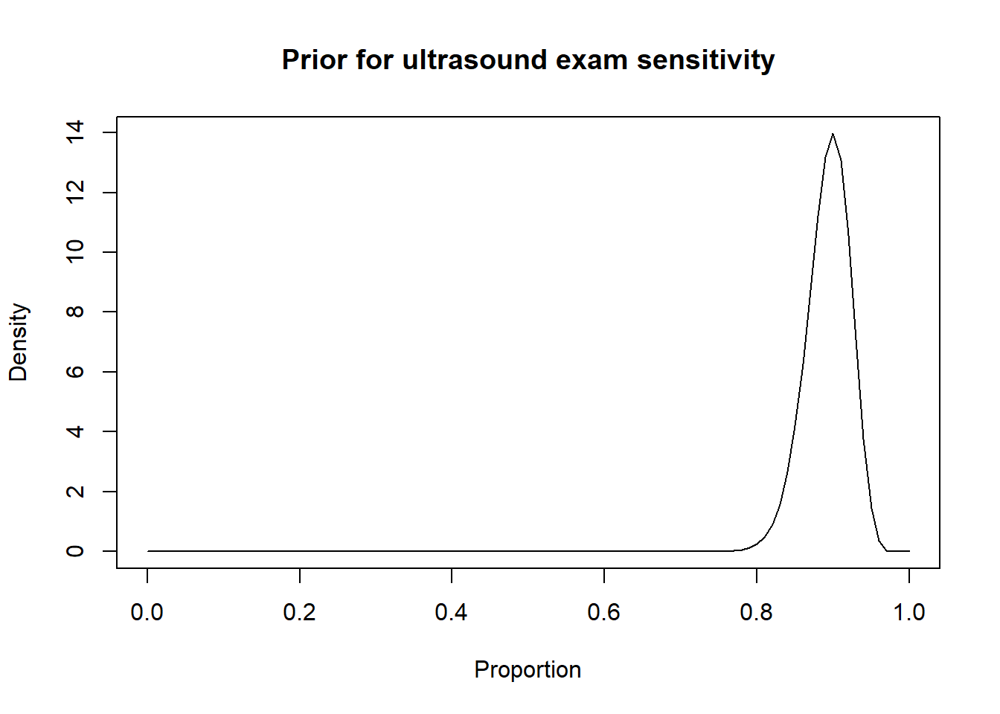
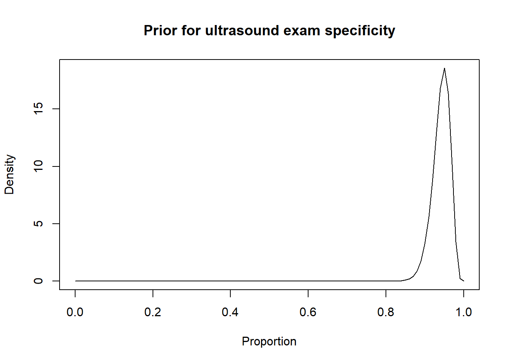
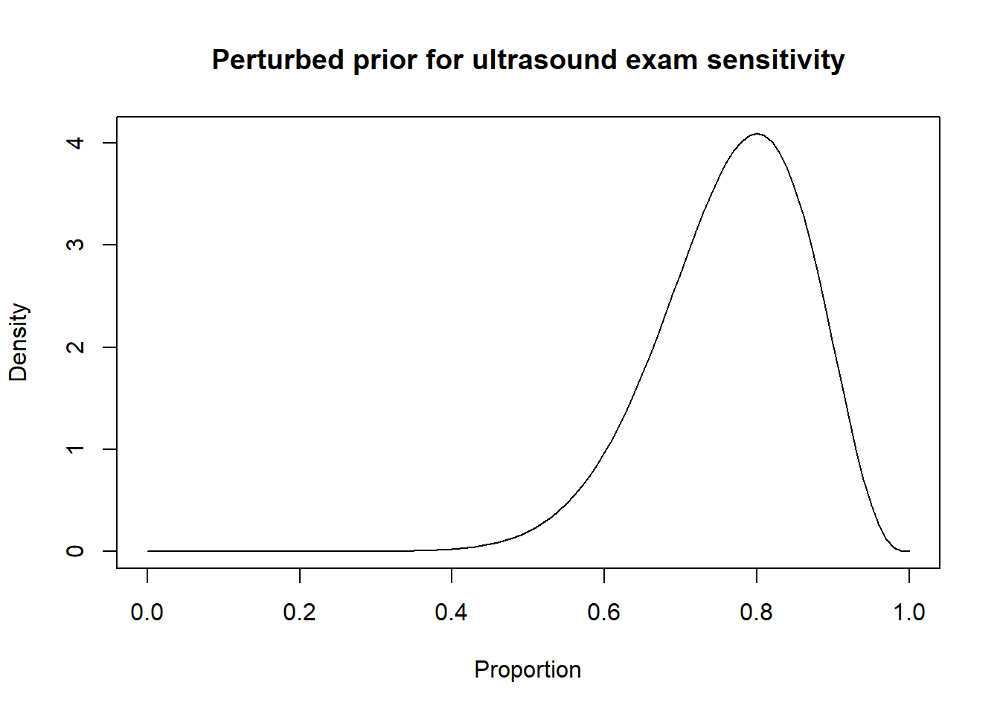
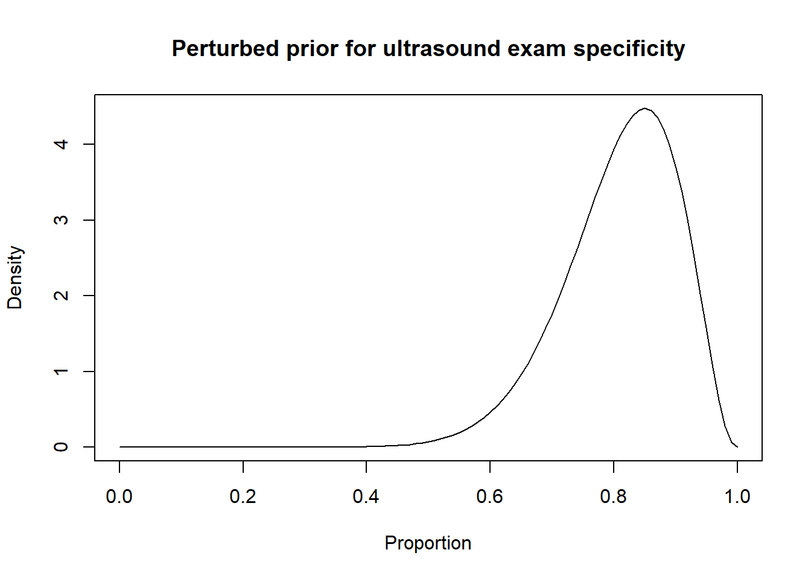

Chapter 14 Sensitivity analyses
An important step of any Bayesian analysis is to evaluate whether the results are strongly affected by the model’s assumptions and/or the choice of priors.
14.1 Model’s assumptions
Regarding the sensitivity of our results to the assumptions made, this could be assessed by comparing the results from the LCM where a given assumption was made vs. the ones from a LCM where the assumption was relaxed. Of course, to fully “isolate” the effect of a given assumption, the same priors would have to be used in both LCM. This is, however, not always possible since, sometimes, the “relaxed” LCM may require a larger number of informative priors to make it identifiable.
In the end, providing the results from an “alternative” LCM could help the readers understand what was the influence of the model chosen on the presented results. As author, you would probably want to use the LCM that is the most “biologically relevant” as your main model, but present the results of these alternative models to illustrate how the choice of model may have impacted the results.
Below are some of the main assumptions that you may want to evaluate.
14.1.1 Conditional independence between tests
Even if two tests rely on very different biological processes, it would be a good practice to evaluate whether allowing for conditional dependence between tests would produce different results. You could do this using the model described in Chapter 5.
14.1.2 Constant test accuracy across populations
To evaluate whether test’s accuracy is constant across populations, the following options could be used:
- Check if the accuracy vary as function of a characteristic of the tested individuals (e.g., age, breed, etc);
- If a substantial number of populations were studied:
- We could run the model after removing one of the population and repeat this process for each population. If the results (e.g., the test’s accuracy parameters) differ substantially for one of the model, this could indicate that the test accuracy is different in this population;
- We could allow for different accuracy in one or many of the populations. For instance, we may define TestA accuracy as SeA-2 and SpA-2 in one (or some) of the populations studied and as SeA and SpA for all other populations. If the SeA and SeA-2 (or SpA and SpA-2) parameters differ substantially, this may, again, indicate that the test accuracy is different in this population.
- We could run the model after removing one of the population and repeat this process for each population. If the results (e.g., the test’s accuracy parameters) differ substantially for one of the model, this could indicate that the test accuracy is different in this population;
14.1.3 Prevalence varies from one population to another
This latter assumption is important for the Hui and Walter (1980) model and other similar models. One thing that can be done is to “eyeball” the initial tests’ results and/or the estimated prevalence to confirm some differences between populations in, respectively, the apparent and/or true prevalence.
Besides, Gustafson et al. (2005) have reviewed the impacts of having two populations with very similar prevalence and the only impact was a lack of identifiability of the model. This latter issue would results in non-converging Markov chains for one or a few of the unknown parameters. If the Markov chains converged, then the assumption of varying prevalence between population is probably not a problem.
14.2 Choice of priors
Whenever informative priors are used in a LCM, the sensitivity of the LCM to the choice of priors should be assessed. This can be done by running the same LCM, but with “perturbed” and usually “more diffuse” priors. Johnson et al. (2019) recommended, for instance, to move the mode of the prior distribution of a given parameter by a few percentage-points (e.g., -15 percentage-points) and to increase the width of its prior distribution. Then, the results from the LCM using the scientific literature-derived priors can be compared to those of the LCM using perturbed priors to assess how sensitive to the choice of priors the results are. The amount and direction by which the mode will be moved and the level of increase of the width of the distribution will depend on the problem at hand.
For instance, in the preceding sections we used the Romano et al. (2006) results, to inform the priors for the Se and Sp of a US exam conducted between 28-45 days post-insemination:
-Se = 0.90 (95CI: 0.85, 0.95)
-Sp = 0.95 (95CI: 0.90, 0.97)
We thus came up with these prior distributions for US’ Se and sp.


Thus, a possibility could be to move down the Se and Sp modes by 10 percentage points (i.e., mode for Se: 0.80 and mode for Sp: 0.85) and to increase the width of the distribution by moving the 2.5th percentiles by 30 percentage-points (Se 2.5th percentile: 0.55; Sp 2.5th percentile: 0.60). Thus:


Then, the results from the LCM with the informative and perturbed priors could be compared.
For instance, in exercise 3 we compared two conditionally independent diagnostic tests (PAG and US) in three populations (herd #1, herd #2, and herd #3). For that model, though the model is identifiable, we could use the Romano et al. (2006) informative priors on US’ Se and Sp. Then, we could run the same LCM, but with the perturbed US’ Se and Sp priors suggested above. If we do that, we would obtain the following results:
Table. Results from a 2 tests, 3 populations LCM using different priors (literature-based vs. perturbed informative priors on US’ Se and Sp). The priors differing between LCM are indicated in bold.
| Parameter | Romano et al. 2006 priors | Perturbed priors | |||
|---|---|---|---|---|---|
| Prior | Posterior | Prior | Posterior | ||
| Prev1 | Beta(1.0, 1.0) | 0.558 (0.496, 0.618) | Beta (1.0, 1.0) | 0.556 (0.494, 0.617) | |
| Prev2 | Beta(1.0, 1.0) | 0.523 (0.440, 0.604) | Beta (1.0, 1.0) | 0.520 (0.435, 0.603) | |
| Prev3 | Beta(1.0, 1.0) | 0.559 (0.452, 0.662) | Beta (1.0, 1.0) | 0.557 (0.449, 0.657) | |
| Se US | Beta (100, 12) | 0.925 (0.893, 0.954) | Beta (13.6, 4.1) | 0.931 (0.890, 0.970) | |
| Sp US | Beta (100, 6.2) | 0.977 (0.956, 0.990) | Beta (14.0, 3.3) | 0.981 (0.957, 0.994) | |
| Se PAG | Beta (1.0, 1.0) | 0.996 (0.981, 1.00) | Beta (1.0, 1.0) | 0.996 (0.980, 1.00) | |
| Sp PAG | Beta (1.0, 1.0) | 0.981 (0.934, 0.999) | Beta (1.0, 1.0) | 0.977 (0.922, 0.999) |
In this specific example, we can see that the results are virtually unchanged. Thus, we could say that our initial analysis was quite robust to the choice of prior distributions. Personally, we would present the LCM with the Romano et al. (2006) priors as our “main” model. If we do have valid information from the literature about one or many of the unknown parameters, then why not using them?